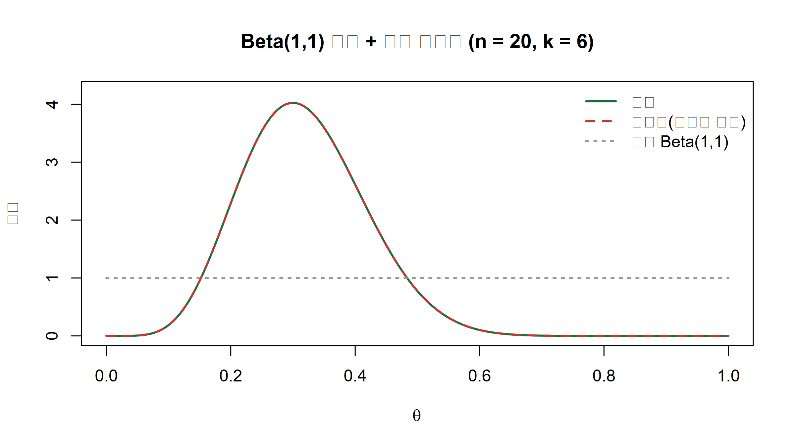
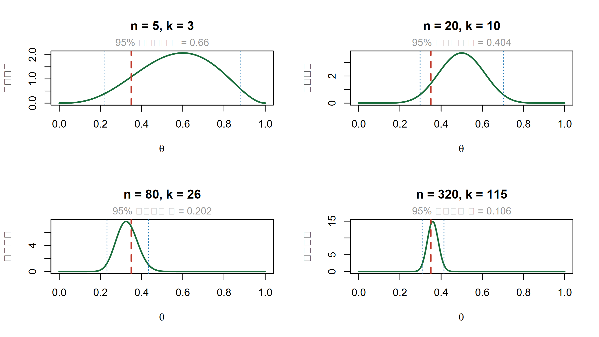
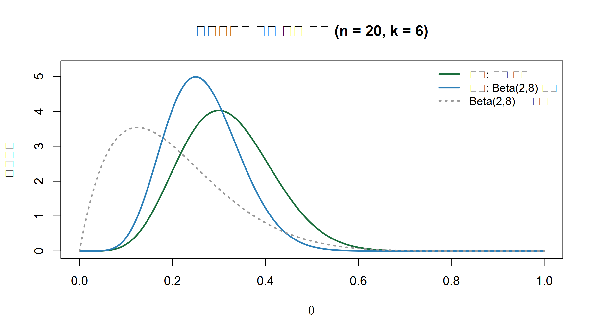

확률의 두 가지 해석에서 출발해 베이즈 정리를 유도하고, 격자 근사로 사후분포를 직접 계산합니다.
Author
Eunji Ha
Published
September 21, 2026
학습 목표
빈도주의(frequentist)와 베이지안(Bayesian)이 무엇을 확률변수로 취급하는지 구분해 설명할 수 있다.
조건부확률의 정의에서 베이즈 정리를 유도하고, 사전분포·가능도·주변가능도·사후분포의 역할을 설명할 수 있다.
유병률이 낮을 때 민감도·특이도가 높아도 양성예측도가 낮아지는 이유를 계산으로 보일 수 있다.
가능도가 모수의 함수이지 확률분포가 아니라는 점을 이항 예제로 설명할 수 있다.
base R만으로 격자 근사(grid approximation) 사후분포를 구현하고 그림으로 확인할 수 있다.
시작하는 질문
전장엑솜 시퀀싱(whole-exome sequencing) 결과에서 어떤 위치의 스크리닝 검사가 “병원성 변이(pathogenic variant) 양성”이라고 보고했습니다. 이 검사는 민감도 99%, 특이도 99%입니다. 그러면 이 사람이 실제로 병원성 변이를 가지고 있을 확률은 얼마입니까?
많은 사람이 99%라고 답합니다. 하지만 그 변이가 인구 1,000명 중 한 명에게만 있다면 실제 확률은 10%에도 못 미칩니다. 검사 성능은 하나도 바뀌지 않았는데 답이 달라지는 이유는, 우리가 알고 싶은 것이 \(p(\text{양성} \mid \text{병원성})\)이 아니라 \(p(\text{병원성} \mid \text{양성})\)이기 때문입니다. 이 둘을 연결하는 도구가 베이즈 정리이고, 이번 주는 여기서 출발합니다.
확률을 읽는 두 가지 방식
빈도주의에서 확률은 장기 상대빈도(long-run relative frequency) 입니다. 반복 가능한 실험을 전제하며, 모수(parameter)는 고정된 미지의 상수이고 확률변수인 것은 데이터입니다. 95% 신뢰구간(confidence interval)이 “이 절차를 반복하면 그중 95%가 참값을 덮는다”는 절차의 성질로 해석되는 이유가 여기 있습니다.
베이지안에서 확률은 믿음의 정도(degree of belief) 입니다. 반복할 수 없는 사건에도 확률을 부여하므로 “이 환자가 병원성 변이 보유자일 확률”, “이 위치의 대립유전자 빈도가 0.3보다 클 확률” 같은 문장이 그대로 성립합니다. 관측된 데이터는 이미 일어난 사실이라 고정이고, 확률변수로 취급되는 것은 모수 \(\theta\)입니다.
빈도주의
베이지안
확률의 의미
장기 상대빈도
믿음의 정도
확률변수
데이터 \(y\)
모수 \(\theta\)
구간 해석
절차가 95% 덮는다
\(\theta\)가 그 안에 있을 확률이 95%
핵심 직관
같은 수식을 써도 두 진영이 다른 문장을 말하는 이유는 무엇을 확률변수로 놓는가가 다르기 때문입니다. 베이지안은 \(\theta\)에 확률을 붙이므로 “\(\theta\)가 0.3보다 클 확률은 0.12입니다”라고 직접 말할 수 있습니다.
베이즈 정리: 조건부확률 뒤집기
베이즈 정리는 새로운 공리가 아니라 조건부확률의 정의를 두 번 쓴 결과입니다. \(p(A \cap B)\)를 두 가지로 분해한 뒤 정리하면 곧바로 나옵니다.
\(p(y \mid \theta)\): \(\theta\)가 주어졌을 때 지금 데이터가 나올 정도. \(\theta\)의 함수로 읽습니다.
\(p(y)\): 모든 \(\theta\)에 대해 평균 낸 값. \(\theta\)에 의존하지 않는 정규화 상수입니다.
따라서 \(p(\theta \mid y) \propto p(y \mid \theta)\,p(\theta)\) 만으로 사후의 모양이 결정됩니다.
\(p(y)\)가 \(\theta\)에 무관하다는 점이 실무에서 결정적입니다. 사후분포의 모양은 사전 곱하기 가능도만으로 정해지고 \(p(y)\)는 전체 넓이를 1로 맞춰 주는 역할만 합니다. 실습에서 적분 대신 격자 합으로 \(p(y)\)를 대신하는 근거도 이것입니다.
희귀 변이 판정과 기저율 오류
수치를 넣어 보겠습니다. 아래는 모두 가상의 데이터입니다. 어떤 병원성 변이의 인구 유병률을 0.1%, 검사의 민감도(sensitivity) 0.99, 특이도(specificity) 0.99로 두겠습니다.
true_pos / (true_pos + false_pos) # 양성 칸에서 진짜가 차지하는 비율 = PPV
[1] 0.09016393
보유자는 1,000명뿐이라 진양성이 990명인데, 비보유자 999,000명의 1%인 9,990명이 위양성으로 잡힙니다. 양성 판정 10,980건 중 진짜는 990건입니다. 검사 성능이 나쁜 것이 아니라 기저율(base rate)이 낮은 것이 원인이며, 이 사전확률을 무시하는 함정을 기저율 오류(base rate fallacy)라고 합니다.
수식으로 보기
유병률 \(\pi\), 민감도 \(\text{Se}\), 특이도 \(\text{Sp}\), 검사 양성 \(T^{+}\), 보유 \(D^{+}\)라 하면
분모가 주변가능도 \(p(T^{+})\)이며, 전확률 법칙으로 \(p(T^{+}) = p(T^{+}\mid D^{+})p(D^{+}) + p(T^{+}\mid D^{-})p(D^{-})\) 로 분해한 것입니다. \(\pi \to 0\)이면 분자는 \(\pi\)에 비례해 줄지만 분모의 위양성 항 \((1-\text{Sp})\)는 거의 그대로 남으므로 PPV가 0으로 떨어집니다.
가능도는 확률분포가 아닙니다
이제 이산 사건에서 연속 모수로 넘어갑니다. 어떤 유전체 위치에 read가 \(n\)개 정렬되었고 그중 \(k\)개가 대립유전자(alternate allele)를 지지한다고 합시다. 대립유전자 비율을 \(\theta\)라 하면 \(k \sim \text{Binomial}(n, \theta)\)입니다.
여기서 \(\text{dbinom}(k \mid n, \theta)\)는 두 가지로 읽힙니다. \(\theta\)를 고정하고 \(k\)를 움직이면 \(k\)에 대한 확률질량함수라 합이 1입니다. 반대로 \(k\)를 관측값으로 고정하고 \(\theta\)를 움직이면 가능도 함수(likelihood function) 이며, 이때 \(\theta\)에 대한 적분은 1이 아닙니다.
n_reads <-20# 가상의 데이터: 이 위치에 정렬된 read 수k_alt <-6# 그중 대립유전자를 지지한 read 수theta_grid <-seq(0, 1, length.out =501)delta <- theta_grid[2] - theta_grid[1]lik <-dbinom(k_alt, size = n_reads, prob = theta_grid) # k 고정, theta 이동c(theta_integral =sum(lik) * delta, one_over_n_plus_1 =1/ (n_reads +1))
이 되어 1이 아닙니다. 가능도는 \(\theta\)의 밀도가 아니라 \(\theta\)를 평가하는 점수입니다. 사전분포를 곱하고 정규화해야 비로소 \(\theta\)에 대한 확률분포, 즉 사후분포가 됩니다.
흔한 오해: p-value와 사후확률
p-value는 \(p(\text{지금 이상으로 극단적인 데이터} \mid H_0\text{가 참})\)로, 조건이 가설이고 확률변수가 데이터입니다. 사후확률은 \(p(H_0 \mid \text{데이터})\)로 조건과 대상이 정확히 반대입니다. “p = 0.03이므로 귀무가설이 참일 확률이 3%”라는 진술은 앞의 예제에서 \(p(T^{+}\mid D^{+}) = 0.99\)를 \(p(D^{+}\mid T^{+}) = 0.99\)로 착각한 것과 같은 오류입니다.
사후는 하나의 값이 아니라 분포입니다
최대가능도추정(maximum likelihood estimate)은 \(\hat\theta = k/n\)이라는 한 점을 돌려줍니다. 베이지안의 답은 \(\theta\) 위의 분포 전체입니다. 분포이므로 “\(\theta\)가 0.5보다 작을 확률” 같은 질문에 바로 답할 수 있고, 불확실성의 크기가 폭으로 드러납니다.
적분을 못 하더라도 사후를 구할 수 있습니다. \(\theta\)를 촘촘한 격자로 자르고 각 격자점에서 사전 곱하기 가능도를 계산한 뒤 전체 합이 1이 되도록 나누면 됩니다. 이것이 격자 근사(grid approximation)입니다.
수식으로 보기
\([0,1]\)을 간격 \(\Delta\)의 격자 \(\theta_1,\dots,\theta_G\)로 나누면 분모의 적분을 합으로 바꿔
로 근사합니다. 격자를 촘촘히 할수록 정확해지지만, 모수가 한두 개일 때만 실용적입니다. 이 챕터에서는 격자 사후를 \(\Delta\)로 나눈 밀도로 씁니다. W4에서는 같은 기호를 격자점의 확률질량(나누지 않은 값)으로 정의하므로 두 주차의 식을 나란히 볼 때 주의하십시오.
민감도는 세 곡선 모두 0.99로 같습니다. 곡선을 갈라놓는 것은 특이도, 즉 위양성률입니다. 희귀 변이일수록 “놓치지 않는 능력”보다 “잘못 부르지 않는 능력”이 결과를 좌우합니다.
격자 근사로 사후분포 계산
# theta 격자 위에서 사후분포를 계산합니다.# k, n: 관측 (대립유전자 read 수, 전체 read 수) / a, b: Beta(a,b) 사전. Beta(1,1)은 균등분포.grid_posterior <-function(k, n, a =1, b =1, n_grid =501) { theta <-seq(0, 1, length.out = n_grid) d <- theta[2] - theta[1] prior <-dbeta(theta, a, b) lik <-dbinom(k, size = n, prob = theta) unnorm <- prior * lik # 정규화 전 사후 = 사전 x 가능도list(theta = theta, prior = prior, lik = lik,posterior = unnorm / (sum(unnorm) * d), delta = d)}# 격자 사후에서 분위수를 읽는 보조 함수 (누적합 이용)grid_quantile <-function(fit, probs =c(0.025, 0.5, 0.975)) { cdf <-cumsum(fit$posterior) * fit$delta cdf <- cdf / cdf[length(cdf)]sapply(probs, function(p) fit$theta[which.max(cdf >= p)])}fit <-grid_posterior(k = k_alt, n = n_reads) # k = 6, n = 20c(posterior_mean =sum(fit$theta * fit$posterior) * fit$delta, mle = k_alt / n_reads)
posterior_mean mle
0.3181818 0.3000000
grid_quantile(fit) # 2.5% / 중앙값 / 97.5%
[1] 0.146 0.312 0.522
lik_scaled <- fit$lik / (sum(fit$lik) * fit$delta) # 그림 비교용 스케일 조정plot(fit$theta, fit$posterior, type ="l", lwd =2, col ="#1a6e3c",ylim =c(0, max(fit$posterior, lik_scaled) *1.05),main ="Beta(1,1) 사전 + 이항 가능도 (n = 20, k = 6)",xlab =expression(theta), ylab ="밀도")lines(fit$theta, lik_scaled, lwd =2, col ="#c0392b", lty =2)lines(fit$theta, fit$prior, lwd =2, col ="grey60", lty =3)legend("topright", legend =c("사후", "가능도(스케일 조정)", "사전 Beta(1,1)"),col =c("#1a6e3c", "#c0392b", "grey60"), lty =c(1, 2, 3), lwd =2, bty ="n")

Figure 3: 사전 x 가능도 -> 사후. 가능도는 비교를 위해 밀도로 스케일을 맞췄습니다.
사전이 균등분포라 사후의 모양은 가능도와 같습니다. 사전이 정보를 거의 주지 않을 때 베이지안 추정이 가능도 기반 추정과 비슷해지는 것을 눈으로 확인할 수 있습니다.
데이터가 쌓이면 사후는 좁아집니다
set.seed(42)true_theta <-0.35# 가상의 참 대립유전자 비율n_seq <-c(5, 20, 80, 320) # 커버리지를 늘려가며par(mfrow =c(2, 2))for (n_now in n_seq) { k_now <-rbinom(1, size = n_now, prob = true_theta) # 가상의 read 카운트 fit_now <-grid_posterior(k = k_now, n = n_now) ci <-grid_quantile(fit_now, c(0.025, 0.975))plot(fit_now$theta, fit_now$posterior, type ="l", lwd =2, col ="#1a6e3c",main =paste0("n = ", n_now, ", k = ", k_now),xlab =expression(theta), ylab ="사후밀도")abline(v = true_theta, lty =2, col ="#c0392b", lwd =2)abline(v = ci, lty =3, col ="#2c7fb8")mtext(paste0("95% 신용구간 폭 = ", round(ci[2] - ci[1], 3)),side =3, line =0.2, cex =0.8, col ="grey60")}

Figure 4: read 수를 늘려가며 본 사후분포. 붉은 점선은 참값 0.35입니다.
패널이 진행될수록 봉우리가 참값 근처로 모이고 폭이 줄어듭니다. 사전의 영향은 약해지고 데이터가 사후를 지배해 갑니다. 다만 격자 계산은 모수가 하나일 때 쓸 만한 방법입니다. W2에서는 같은 문제를 켤레사전분포(conjugate prior)로 풀어 사후가 Beta\((a+k,\ b+n-k)\)라는 닫힌 형태로 나오는 것을 봅니다.
연습문제
문제 1. PPV 계산
어떤 가상의 병원성 변이 유병률이 5,000명당 1명이고 검사 민감도는 0.95, 특이도는 0.98입니다. (a) 양성일 때 실제 보유자일 확률은 얼마입니까? (b) 민감도를 그대로 둔 채 PPV를 0.5 이상으로 올리려면 특이도가 최소 얼마여야 합니까?
(a)에서 PPV는 약 0.94%로 양성 100건 중 1건이 채 안 됩니다. (b)에서 필요한 특이도는 약 0.99981이며, 위양성률을 2%에서 0.019% 수준까지 100배 낮춰야 합니다. 희귀 변이 스크리닝에서 확진 검사(confirmatory test)를 따로 두는 이유가 이것입니다.
문제 2. 사전분포를 Beta(2,8)로 바꾸기
같은 데이터(n = 20, k = 6)에 Beta(2,8) 사전을 적용해 격자 사후를 다시 구하고, Beta(1,1)일 때와 사후평균을 비교하십시오. Beta(2,8)은 평균이 0.2인, 낮은 비율 쪽으로 치우친 사전입니다.
풀이
fit_flat <-grid_posterior(k =6, n =20, a =1, b =1)fit_info <-grid_posterior(k =6, n =20, a =2, b =8)post_mean <-function(f) sum(f$theta * f$posterior) * f$deltac(prior_flat =post_mean(fit_flat), prior_beta28 =post_mean(fit_info), mle =6/20)
plot(fit_flat$theta, fit_flat$posterior, type ="l", lwd =2, col ="#1a6e3c",ylim =c(0, max(fit_flat$posterior, fit_info$posterior) *1.05),main ="사전분포에 따른 사후 비교 (n = 20, k = 6)",xlab =expression(theta), ylab ="사후밀도")lines(fit_info$theta, fit_info$posterior, lwd =2, col ="#2c7fb8")lines(fit_info$theta, dbeta(fit_info$theta, 2, 8), lty =3, lwd =2, col ="grey60")legend("topright", legend =c("사후: 균등 사전", "사후: Beta(2,8) 사전", "Beta(2,8) 사전 자체"),col =c("#1a6e3c", "#2c7fb8", "grey60"), lty =c(1, 1, 3), lwd =2, bty ="n", cex =0.9)

Beta(2,8) 사전은 관측 이전에 이미 “가상 성공 2회, 가상 실패 8회”(사전 표본크기 \(a+b=10\))를 본 셈이라 사후평균이 0.3보다 낮은 쪽으로 당겨집니다. 이 \((a, b)\) 읽기는 W2의 가상 관측 횟수(pseudo-count) 규약과 같습니다. 데이터가 적을수록 이 당김이 큽니다.
문제 3. 한 번에 갱신 vs 나눠서 갱신
n = 30에서 k = 9를 관측했습니다. 이를 (n = 10, k = 4)와 (n = 20, k = 5)로 나눠 두 번 갱신한 결과가 한 번에 갱신한 결과와 같음을 코드로 확인하십시오.
풀이
# 임의의 사전 밀도 벡터를 받아 한 번 갱신하는 함수update_grid <-function(theta, prior_dens, k, n) { d <- theta[2] - theta[1] unnorm <- prior_dens *dbinom(k, size = n, prob = theta) unnorm / (sum(unnorm) * d)}theta <-seq(0, 1, length.out =501)prior0 <-dbeta(theta, 1, 1) # 출발 사전: 균등post_batch <-update_grid(theta, prior0, k =9, n =30) # (1) 한 번에 갱신post_step1 <-update_grid(theta, prior0, k =4, n =10) # (2) 첫 배치post_step2 <-update_grid(theta, post_step1, k =5, n =20) # 그 사후를 사전으로max(abs(post_batch - post_step2)) # 사실상 0
[1] 7.105427e-15
all.equal(post_batch, post_step2)
[1] TRUE
두 결과가 일치하는 이유는 독립 관측에 대해 가능도가 곱으로 분해되기 때문입니다. \(p(\theta) \cdot L_1(\theta) \cdot L_2(\theta)\)의 곱셈 순서를 바꿔도 값이 같고 정규화는 마지막에 한 번만 영향을 줍니다. 이 성질 덕분에 베이지안 갱신은 데이터를 스트림처럼 순차 처리할 수 있습니다.
정리
빈도주의는 데이터를, 베이지안은 모수를 확률변수로 취급합니다. 수식이 아니라 이 전제가 해석을 가릅니다.
베이즈 정리는 조건부확률의 정의에서 바로 나오며, 사후 \(\propto\) 사전 \(\times\) 가능도입니다. 주변가능도 \(p(y)\)는 \(\theta\)에 무관한 정규화 상수입니다.
가능도는 모수의 함수이며 확률분포가 아닙니다. \(\theta\)에 대한 적분은 1이 아닙니다.
사후는 한 점이 아니라 분포입니다. 격자 근사만으로도 base R에서 사후평균과 신용구간을 얻을 수 있습니다.
데이터가 쌓이면 사후가 좁아지고, 순차 갱신과 일괄 갱신의 결과는 동일합니다.
다음 시간
W2에서는 이번 주의 격자 계산을 손으로 푸는 방법을 배웁니다. 이항 가능도에 Beta 사전을 쓰면 사후가 다시 Beta가 되는 켤레(conjugacy) 구조를 유도하고, 사전의 모수를 “가상의 사전 관측 수”로 해석합니다. 이어서 사후예측분포(posterior predictive distribution)로 아직 보지 않은 read를 예측하는 데까지 나갑니다.